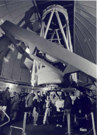

Mt. Bigelow Observatory -- Altitude 2508 m (8230 feet)

The Mt. Bigelow Observatory site
is located a short, ~20 minute drive down from the summit of Mt. Lemmon. It uses commercial power but has its own standby generating system and its own water supply. A 10-bed dormitory (six bedrooms), built of California redwood, provide living facilities and an attractive location for discussions among Astronomy Campers and for "night-lunch". This dormitory generally houses observers using the two telescopes located at the Mt. Bigelow site.
The 61-inch Kuiper Telescope
The 61-inch Kuiper Telescope (the large white dome in the image below) was funded by NASA and has been operated by The University of Arizona since 1965. Its excellent image quality provided essential astronomical support of the U.S. Apollo program. The telescope can be operated at either f/13.5 or f/45 using interchangeable secondary mirrors. It is fully computerized and achieves excellent pointing accuracy. Click here for more specifics on the 61-inch telescope.
The telescope can be operated at either f/13.5 or f/45 using interchangeable secondary mirrors. It is fully computerized and achieves excellent pointing accuracy. Click here for more specifics on the 61-inch telescope.
The 30-inch Schmidt telescope
The 30-inch Schmidt telescope (f/3), to the right of the 61-inch dome, has been used in the Catalina Sky Survey for the discovery of near-earth asteroids and new comets through wide-field (~7x7 deg.) imaging. It has recently been converted from photography to more sensitive CCD imaging, using a 4096x4096 pixel detector. At the 1999 Adult Astronomy Camp, participants confirmed the discovery of a new comet and had their work cited internationally.
{kind=link}
is located a short, ~20 minute drive down from the summit of Mt. Lemmon. It uses commercial power but has its own standby generating system and its own water supply. A 10-bed dormitory (six bedrooms), built of California redwood, provide living facilities and an attractive location for discussions among Astronomy Campers and for "night-lunch". This dormitory generally houses observers using the two telescopes located at the Mt. Bigelow site.
The 61-inch Kuiper Telescope
{kind=link}
The 61-inch Kuiper Telescope (the large white dome in the image below) was funded by NASA and has been operated by The University of Arizona since 1965. Its excellent image quality provided essential astronomical support of the U.S. Apollo program.
 The telescope can be operated at either f/13.5 or f/45 using interchangeable secondary mirrors. It is fully computerized and achieves excellent pointing accuracy. Click here for more specifics on the 61-inch telescope.
The telescope can be operated at either f/13.5 or f/45 using interchangeable secondary mirrors. It is fully computerized and achieves excellent pointing accuracy. Click here for more specifics on the 61-inch telescope.
The 30-inch Schmidt telescope
{kind=link}
The 30-inch Schmidt telescope (f/3), to the right of the 61-inch dome, has been used in the Catalina Sky Survey for the discovery of near-earth asteroids and new comets through wide-field (~7x7 deg.) imaging. It has recently been converted from photography to more sensitive CCD imaging, using a 4096x4096 pixel detector. At the 1999 Adult Astronomy Camp, participants confirmed the discovery of a new comet and had their work cited internationally.
Home | Information | Registration | Articles | Links
All Images, Media and Content - Copyright © 2008 Astronomy Camp
Site Design by Jacob Omann. Maintained by Astronomy Camp. Updated December 17, 2012
All Images, Media and Content - Copyright © 2008 Astronomy Camp
Site Design by Jacob Omann. Maintained by Astronomy Camp. Updated December 17, 2012